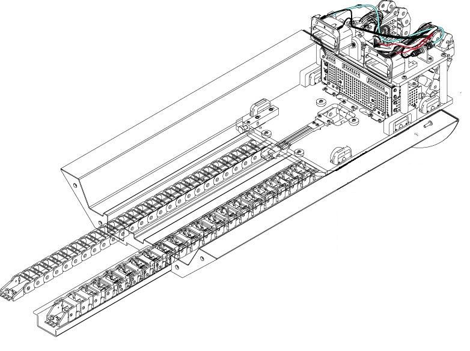
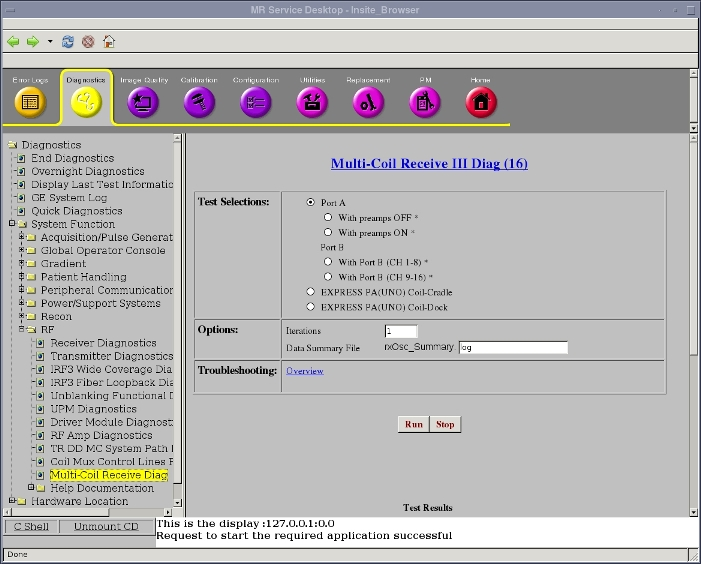
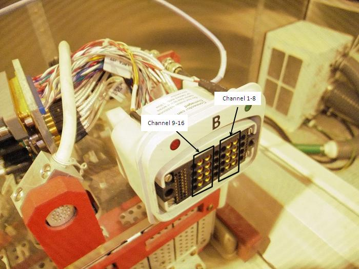
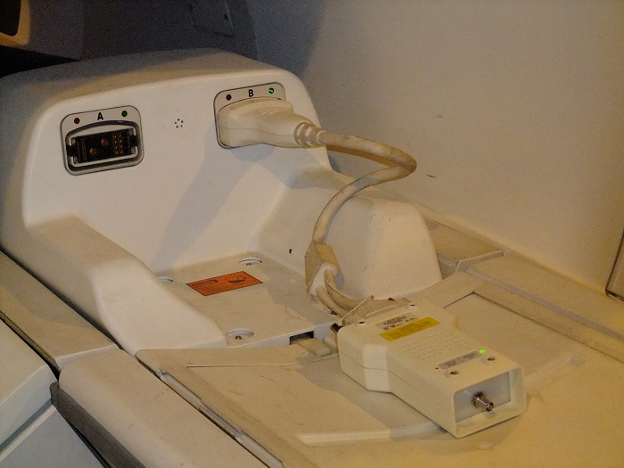
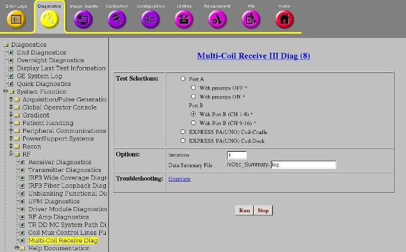
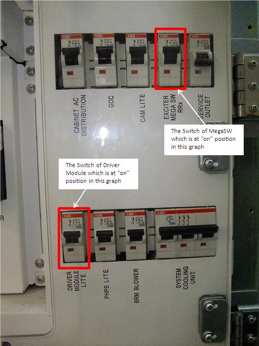
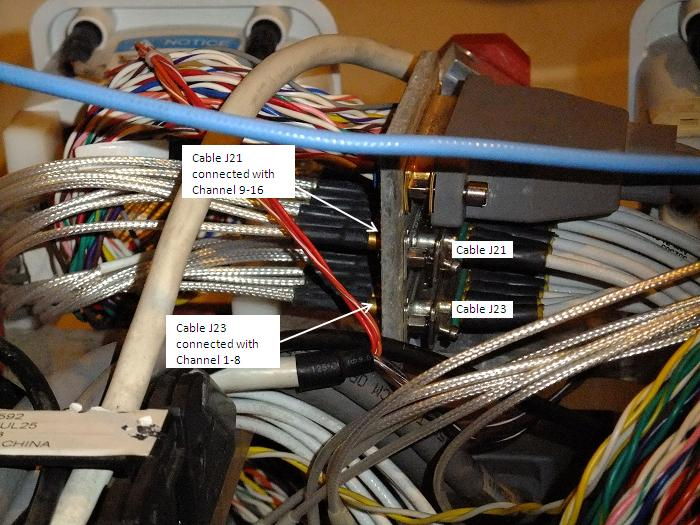
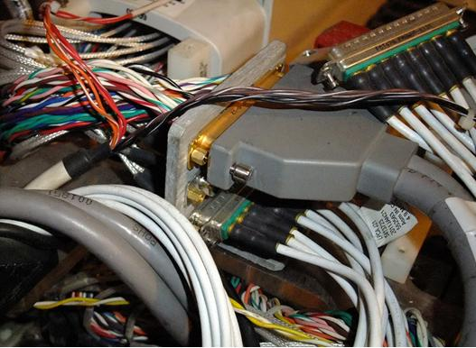
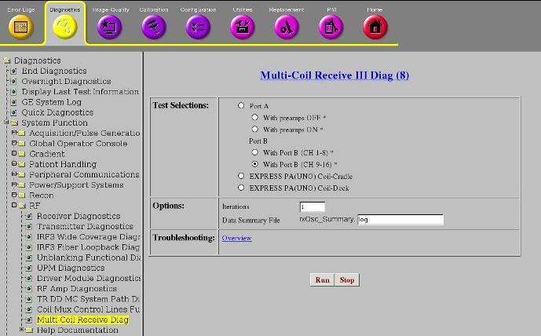

MCR III Tool
Prerequisites
The Multicoil Receive Chain Tool provides a means of diagnosing problems in Multicoil Receive (MCR) chain hardware, without use of coils. The tool sends signals down the individual paths to isolate specific channels in the receive chain. The tool’s Graphical User Interface (GUI) guides the user through the various steps involved in running the tool and troubleshooting the problem. The GUI has built-in instructions and detailed setup instructions, troubleshooting flowcharts and documents that will help facilitate rapid diagnosis of the problem. There are two levels of tests that can be run using the MCR III tool: Default and Individual. Once you've decided to use MCR III tool, determine which level of test your situation requires. The default and port-specific levels of tests offer increased user-friendly automation that is been omitted from the individual tests by design. Therefore, it is imperative to identify which level of tests you need to perform and then follow the instructions for that specific level.
-
Port A Default Tests
-
This test must be passed during the MR installation.
-
In most scenarios, this is the first test that should be run when using the MCR tool.
-
If this test fails, individual tests can be run to further isolate the failing component.
-
-
Port A Individual Tests
-
These tests are designed to run after the default test indicates a failure.
-
-
Uno Coil Test For Fixed Table
-
This test must be passed during the MR installation.
-
MCR III tool consist of following two Tests. For Detachable Table, perform Port A Default Test during Installation. For Fixed Table, perform both Port A Default Test and express PA Coil Test during Installation.
-
MCR III Port A Test: MCR III Port A Test
-
Connector BMCR III Port B Test
-
MCR III Express PA Coil Test for Fixed Table: MCR III Express PA Coil Test for Fixed Table
1 MCR III Port A Test
1.1 Hardware setup
Procedure
- Port A's path travels through the hypertronics port, cable path,
and the preamps within the Multi-coil Interface Box before going to
the Mega-switch.
Figure 1. MCR III Port A Testing

- Move the platform so the LPCA port are accessible.
Figure 2. LPCA Hypertronics Ports

- Connect MCR3 Tool to the Port A of LPCA.
1.2 RUN MCR test
Procedure
- If Running from the Common Service Desktop, click on the Diagnostics Tab and then, on the left pane, System Function->RF->Multi-Coil
Receive III Diag.
Figure 4. MCR III Home Page

The MCR interface is designed to automatically display tools that are pertinent to your system.
- Verify that the MCR tool is connected to the port A (see MCR III Port A Testing ).
- Select the Port A and then click Run. This test includes the following two tests.
- With preamps OFF (Port A).
- With preamps ON (Port A).
note:The Default tests will automatically run all the individual Port A tests.
The individual tests are primarily designed to allow field engineers to hammer a specific portion of the MCR chain.
Figure 5. Port A Test

- If you want to run the individual test, select one you want to run. (With preamps OFF (Port A) or With Preamps ON).
- If the MCR tool reports a failure (designated by red text in
the results, for example,Figure 6), see MCR III Chain Tool Troubleshooting for troubleshooting.
Figure 6. Failed Test

If MCR III tool is invoked from Installation and Calibration Wizard (ICW), the following menu is automatically shown. Please follow this procedure even if the screen seems slightly different for ICW Installation Mode.
Figure 3. MCR III tool

2 Connector B
Procedure
- Illustration 7 shows how Port B looks like. The eight pins on
the right are for channel 1-8, while the pins on the left are for
the channel 9-16.
Figure 7. LPCA B Ports

2.1 Port B channel 1-8
Procedure
- Connect the MCR tool to the B port Figure 8.
Figure 8. LPCA port B connecting with MCR3 tool

- Select "With Port B(CH 1-8)"and then click [Run]
Figure 9. Test of channel 1-8 of port B

2.2 Port B channel 9-16
Procedure
- Disconnect the MCR tool from the B port.
- Shut down the power of driver module and MegaSwitch.Figure 10
Figure 10. The switch of Driver Module

- Remove LPCA cover.
- Locate The cable J23 which is connecting channel 1-8. The other
cable connecting channel 9-16 is J21
Figure 11. LPCA after moving the cover

- Disconnect the cables J21 and J23. Re-connect J21 to the port
linking with channel 1-8
Figure 12. LPCA after swap

- Turn on the power of Driver module and MegaSwitch.
- Select "With Port B(CH 9-16)"and then click [Run]
Figure 13. Test of channel 9-16 of port B

2.3 Finalization
Procedure
- Shut down the power of Driver Module and MegaSW.
- Swap the J21 and J23 back to the original position [see illustration 11].
- Turn on the power of Driver module and MegaSW.
- TPS reset.
3 MCR III Express PA Coil Test for Fixed Table
3.1 Hardware Setup
Procedure
- Remove 3 Port A’s connectors from MCR3 Tool.
Figure 14. Disconnect 3 Connectors from MCR3 tool

- Move the cradle inside the bore until free from the side guards.
Release the cradle from the LPCA.
Figure 15. Release the cradle

- Place the thin foam underneath the cradle front to prevent bridge and cradle from scratching.
- Lift the cradle at the handle by 1 hand and use the other hand
to insert the foam.
Figure 16. insert the foam
 note:
note:Foam is stored in Cart during Installation.
Figure 17. Foam Location

- notice
- Access to the Connectors below the Cradle.
Figure 18. Access to the Connectors

- Remove RF & DC connector from the socket mounted on the
cradle:
Figure 19. Remove RF & DC connector

- Remove cable track from cradle.
Figure 20. Remove Cable Trak

- Remove PADs and restore the Cradle position.
- Connect RF & DC cables, UNO PA coil RF & DC cable ASSY
and MCR III tool. See Figure 21 or Figure 22.
Figure 21. RF & DC cables connection

Figure 22. RF & DC cables connection

 |
3.2 RUN MCR test
Procedure
- Go to the Service Desktop and start the Common Service Browser if it is not already running.
- Click on the Diagnostics Tab and then,
on the left pane, System Function->RF->Multi-Coil Receive III Diag.
Figure 23. MCR III Home Page

The MCR interface is designed to automatically display tools that are pertinent to your system.
- Select the express PA Coil-Cradle and
then click Run.
Figure 24. Express PA Coil Test
Figure 25. Passed Result

- If the MCR tool reports a failure (designated by red text in
the results, for example,Figure 26), see MCR III Chain Tool Troubleshooting
Figure 26. Failed Result

- Restore the PA Coil as it was by reverse order.
4 Finalization
Procedure
- Perform [TPS Reset].